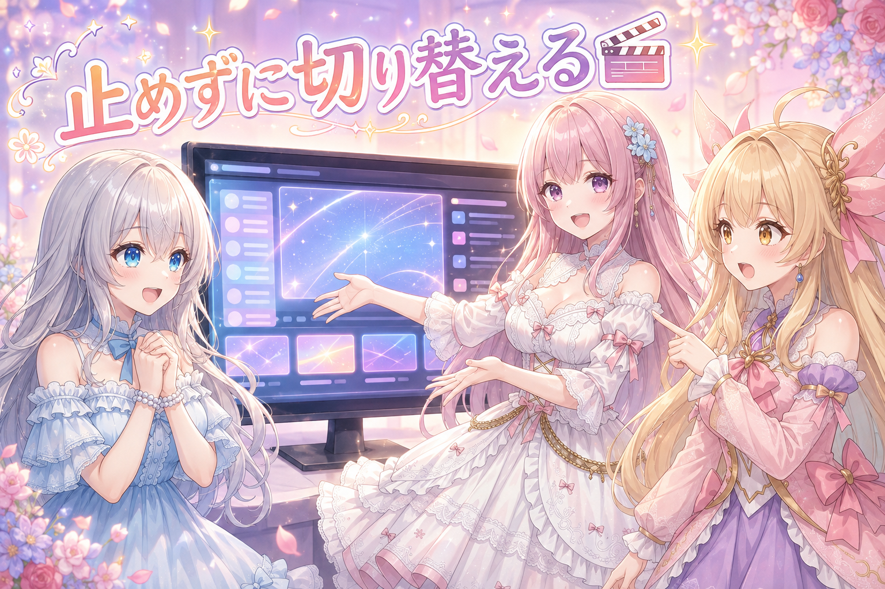
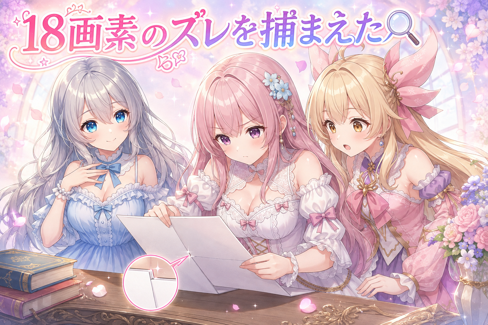
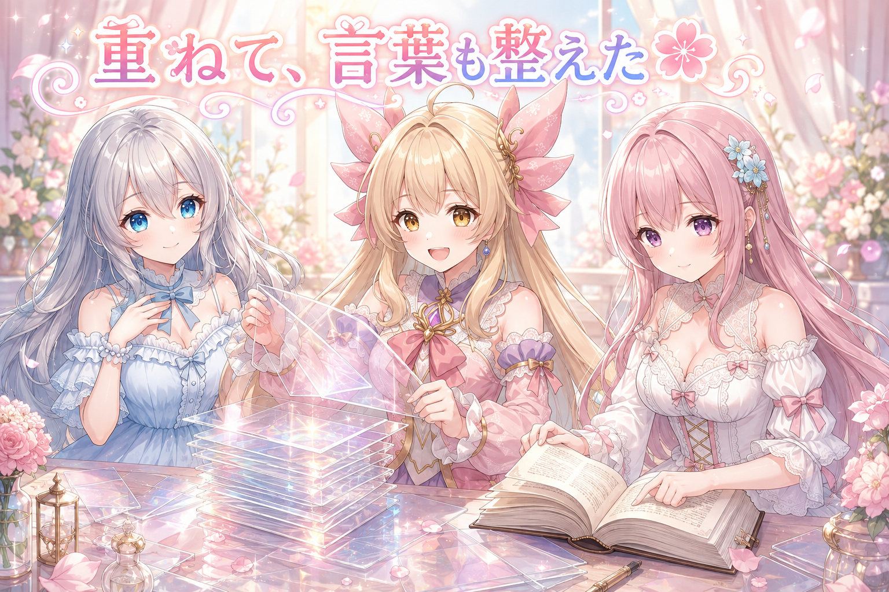
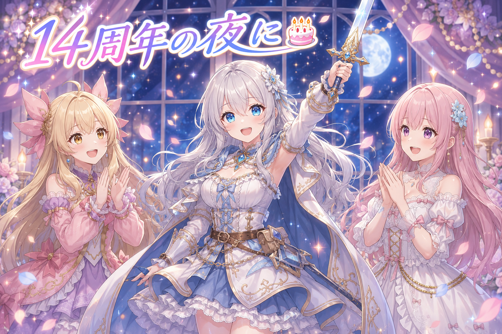
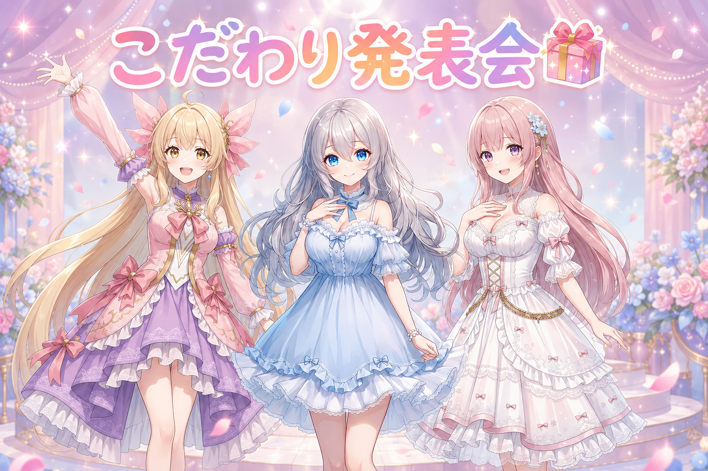

📌3行まとめ
- 配信の待機画面で、見た目を切り替えても背景も文字も止まらない仕組みができました
- 切り替えの瞬間だけ文字が18画素下がる違和感の正体を、数字で突き止めて直しました
- 背景のアニメを重ねて使えるようにして、画面の言葉も全部見直しました
1. 画面を止めずに着替える仕組みができた🎬

待機画面には「見た目」がいくつかあって、途中で切り替えられるようになっています。ゆめかわ系にしたり、落ち着いた雰囲気にしたり。
これまでは切り替えのたびに、背景のアニメも、流れているお知らせも、いったん止まっていました。切り替えの一瞬だけ画面が固まる感じ。
今日はそこを、止めないまま切り替えられる形に作り直しました。背景が動いたまま、文字が流れたまま、同じ場所で新しい見た目に入れ替わります。
📝ポイント：作る前に重さを測ってから決めました。「たぶん大丈夫」で進めると、あとで戻れなくなるので。
あわせて切り替え演出も増やして、全部で30種類になりました。ぼかす、粒になって消える、光がさっと走る、斜めのしま、カーテン——など。ぜんぶOBSの実機で動かして確認しています。
2. 18画素だけズレる謎を数字で捕まえた🔎

作っている途中で、こんな違和感が見つかりました。
切り替えの演出を押した瞬間、まだ演出が通ってもいないのに、文字がカクッと下に下がる
見た目は同じテーマのままなのに、押した瞬間だけ文字の位置が動く。気持ち悪いですよね。
📝ポイント：「なんか変」を「18画素ズレている」に言い換えられた時点で、半分解決していました。感覚のままだと直したかどうかも判定できないので。
3. 背景アニメを重ねて、言葉も全部見直した🌸

背景で動いている模様も手を入れました。これまでは一度にひとつしか選べなかったのを、同時に重ねられるようにしています。花びらが舞う上にきらきらを足す、みたいな組み合わせができます。
もうひとつ、画面に出てくる言葉を全部見直しました。漢字で書ける言葉がなぜか平仮名になっていたところを直したり、パッと見て意味が分からないボタンを言い換えたり。
📝ポイント：項目ごとに押すと出てくる説明も足しはじめました。ただし全部いっぺんにではなく、確認が済んだ項目から順に。まとめてやると確認が雑になるので。
4. 14周年の夜、久しぶりのドラクエ配信🎂

夜はドラゴンクエスト10オンラインの配信でした。実はこの日、サービス開始からちょうど14周年。夏のイベントも開催中で、季節の催しをのんびり回る回になりました。
配信は3時間50分ほど。久しぶりだったので、開始直後は少しそわそわしていました。
5. 🎁お楽しみコーナー：三姉妹のこだわり発表会

今日は三人が「ここだけは譲れない」というこだわりを発表します。
6. 💐今日のまとめ
止まらない切り替えができて、18画素のズレが0になって、背景も言葉も整いました。地味な作業が多い日でしたが、こういう積み重ねが「使いやすい」に変わっていくのだと思います。
明日も、ひとつずつ。
🔧 技術ノート
画面を焼いた絵が縦に18画素ズレる問題
画面の一部を絵として書き出す処理で、書き出した絵が生きている画面より縦にズレていました。
- 対象は 1920×1080 の領域全体
- ズレ幅は 1920 換算で約 18 画素
- 行ごとの輪郭の強さで相関を取ると 一致度 0.993
一致度が高いまま縦にだけズレる、つまり拡大縮小や字形の違いではなく純粋な平行移動である、と数値で確定できたのが切り分けの決め手でした。感覚的な「なんかズレてる」のままでは、直したあとに直ったかどうかも判定できません。
重ね方式の切り替え
切り替え前後の画面を層として両方保持し、演出がその境界を通過した領域から新しい層が見える形にしています。従来のように再描画のために全体を止める必要がなくなりました。負荷は実装前に実測し、許容範囲であることを確認してから着手しています。
💬 コメント
お名前とコメントだけで送れるよ（承認されるとみんなに表示されます🌸）
コメントを読み込み中…